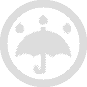

Toggle navigation
Collect
Weather
Map
Findings
Logout
Salamander Watch
Start New Observation
Resume Observation
Take a Photo
Add photo to this observation
Next
Migration Orientation
N
S
Capture Orientation
Back
Next
Life Status
Alive
Injured
Dead
I don't know
Back
Next
Traffic Conditions
Light Traffic
Moderate Traffic
Heavy Traffic
Back
Next
Tunnel Use
I saw this salamander ENTER a tunnel (only)
I saw this salamander both ENTER and EXIT a tunnel
I saw this salamander EXIT a tunnel (only)
I did not see a salamander use a tunnel
Back
Next
Additional Field Notes (Optional) Notes about field conditions, other organisms, or any human activity you noticed while collecting data
Back
Finish
°F
##
mph
##

##
pop
##
humidity
##
°F dewpoint
Street View:
GPS Position:
##
##
Elevation:
##
ft
Please log in